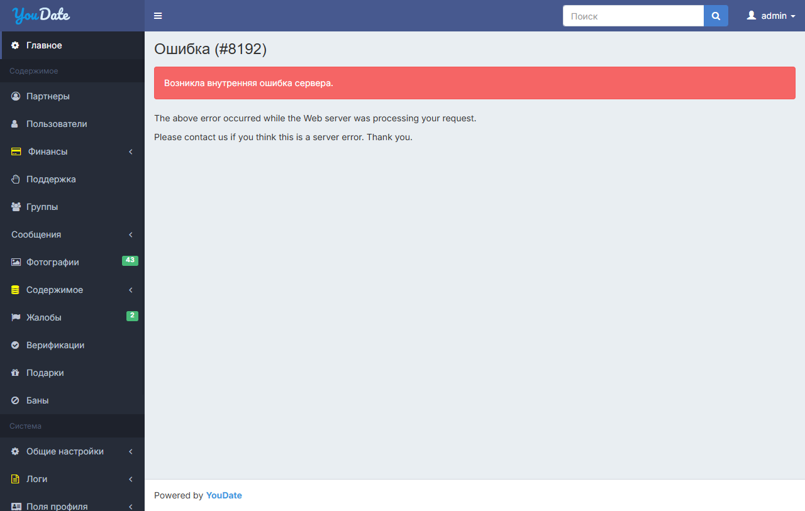
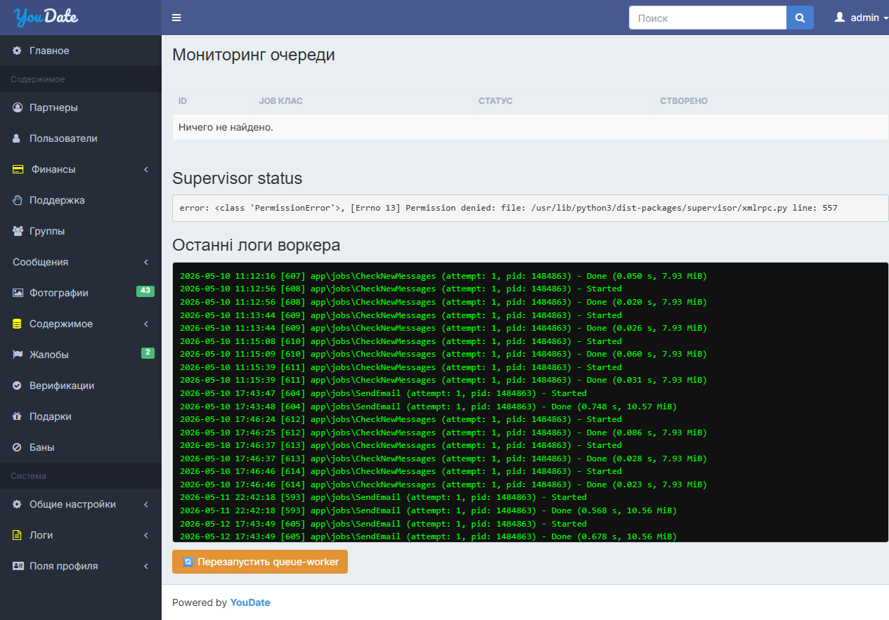

Короткий вывод
Релиз нельзя считать чистым после перехода на PHP 8.5. Базовая админка открывается правильным способом через /ru/admin, но внутри live найдены воспроизводимые дефекты: публичные новости падают с #8192, профиль из каталога падает с #2, фильтр Cities по имени падает с #8192, Plugins падают с #8192, в меню админки рендерятся placeholder-ссылки {url}, а часть admin route inventory отдает 404.
Как тестировалось
| Зона | Статус | Что реально сделано | Что не делалось на live | Evidence |
|---|---|---|---|---|
| PHP/runtime | PASS | Live dashboard показывает PHP 8.5.0; public headers также отдают X-Powered-By: PHP/8.5.0. |
Не применялось. | admin audit JSON |
| Публичный сайт | FAIL | HTTP-crawl обычным посетителем: 180 GET-страниц, 345 форм заинвентаризировано, внутренние ссылки проверены. | POST login/signup/contact не отправлялись, чтобы не создавать и не менять production-данные без QA-fixture. | public audit JSON, CSV |
| Админка | FAIL | Авторизованная Manhattan-сессия: 52 admin-страницы, 61 форма, 925 кнопок, 113 rendered sort/pagination links, 54 GET-фильтра. | 365 кнопок/действий с риском изменения данных помечены BLOCKED_BY_RISK: save, delete, approve/reject, install/disable, settings mutation, bans, money-changing flows. |
admin audit JSON, CSV |
| Targeted regression | FAIL | Повторены важные URL: Cities base/name/search/sort/page, Countries sort, Messages sort/page, Plugins. | После нескольких 500 часть поздних URL ушла в RETEST_TOOLING; основной admin audit уже зафиксировал Plugins/Messages failures отдельно. |
targeted JSON |
| Код и синтаксис | LIMITED | Локальный PHP-снимок проверен в релевантных зонах: 368 PHP-файлов, 0 parse errors под локальным PHP CLI 8.1. Найден один suppressed @file_get_contents risk point. |
Это не production stack trace и не полноценный PHP 8.5 lint, потому что production-код/логи не доступны из этого контура. | lint JSON, risk scan JSON |
Дефекты для программиста
| ID | Факт | Как должно быть | Как воспроизвести | Где смотреть | Retest |
|---|---|---|---|---|---|
| CF-PHP85-01 FAIL |
Публичный раздел новостей падает с #8192 во всех проверенных языках: /ru/news, /en/news, /pt/news, /de/news, /es/news, /it/news. Article URL также падает. |
Список новостей и карточка новости должны открываться или отдавать контролируемый empty state без 500. | Открыть https://confideline.com/ru/news или перейти по News-ссылке с главной/языковой страницы. |
News controller/model/view, i18n route handling, PHP 8.5 deprecations promoted to exceptions. Нужен production stack trace по #8192. |
После фикса открыть news index/article для ru/en/pt/de/es/it; все должны вернуть 200 без #8192. |
| CF-PHP85-02 FAIL |
Публичный профиль /ru/profile/OmkarTiwari и /en/profile/OmkarTiwari, найденный из directory, возвращает HTTP 500 / Ошибка (#2). |
Профиль из каталога должен открываться. Если пользователь недоступен, нужен контролируемый 404/empty state, не 500. | Открыть /ru/directory, перейти на профиль OmkarTiwari. |
Profile controller/view, user/profile relation, media/avatar/widgets, access/visibility checks. Нужен live stack trace по #2. |
Directory -> profile в ru/en без 500. |
| CF-PHP85-03 FAIL |
Admin Cities: базовая /ru/admin/geoname/index открывается, сортировка ?sort=name и ?page=2 сейчас PASS, но direct filter GeonameSearch[name]=Munich стабильно дает Ошибка (#8192). |
Поиск города по имени должен фильтровать таблицу и не падать на строковых значениях. | Войти через /ru/admin, открыть Cities, в поле name задать Munich или открыть /ru/admin/geoname/index?GeonameSearch%5Bname%5D=Munich. |
Live-класс поиска GeonameSearch или аналог в текущем деплое. В локальном source snapshot этот search class не найден, поэтому нужен production файл/stack trace. | targeted regression: base PASS, name=Munich FAIL #8192. |
| CF-PHP85-04 FAIL |
Admin Plugins: /ru/admin/plugin/index и /ru/admin/plugin/browse возвращают Ошибка (#8192). |
Раздел должен показывать installed/browse plugins или контролируемое сообщение, но не 500. | Войти через /ru/admin, левое меню -> Плагины, открыть installed и browse. |
application/modules/admin/controllers/PluginController.php, application/plugins/PluginManager.php, PluginInstaller.php, plugin views, внешний provider/download client. |
Оба URL возвращают 200 без #8192. |
| CF-PHP85-05 FAIL |
В DOM админки на 52 проверенных страницах найдено 312 occurrences placeholder-ссылки {url}, например /ru/%7Burl%7D и /ru/admin/country/%7Burl%7D. Клик ведет на 404. |
Групповые пункты меню должны быть некликабельными, иметь #, раскрывать submenu или вести на реальный route. |
В админке кликнуть родительские группы меню: Финансы, Сообщения, Содержимое, Countries & Cities, Логи, Для розробника. | Admin menu widget/template. Вероятная зона: application/modules/admin/widgets/Menu.php или шаблон, где {url} остается в parent item без url. |
В DOM не должно быть href="{url}" и encoded %7Burl%7D. |
| CF-PHP85-06 FAIL |
Admin Messages: base page в полном audit открывалась, но rendered sort/pagination links ?sort=text, ?sort=created_at, ?page=1..4 дают Ошибка (#8192). |
Сортировка и пагинация сообщений должны работать как read-only навигация. | Открыть /ru/admin/message/index, нажать сортировку Text/Created At или пагинацию. |
Message admin controller/search model/grid provider. Проверить PHP 8.5 deprecations при query/sort/pagination. | Все rendered sort/page links дают 200 и таблицу сообщений. |
| CF-PHP85-07 FAIL |
Admin Queue Monitor показывает functional error внутри страницы: Supervisor status error: PermissionError ... supervisor/xmlrpc.py line 557. |
Монитор очереди должен показывать статус supervisor/worker или контролируемое сообщение о недоступности без Python PermissionError в UI. | Открыть /ru/admin/queue-monitor/index. |
Queue monitor controller/view, supervisor XML-RPC access, permissions for supervisor socket/config. | Страница показывает статус supervisor без traceback/PermissionError. |
Что проверено и что заблокировано риском
| Тип действия | Результат | Комментарий |
|---|---|---|
| GET pages / links / sort / pagination / filters | EXECUTED | Выполнялись на live, потому что не должны менять состояние. |
| Forms/buttons inventory | CAPTURED | 61 admin form, 925 admin buttons; 560 read-only/navigation, 365 risky controls. |
| Save/delete/approve/reject/install/disable/settings/bans/money | BLOCKED_BY_RISK | Не нажимались без QA-prefixed fixture, baseline snapshot и rollback. Иначе невозможно честно "вернуть настройки в текущее состояние". |
| Production PHP stack trace | NEEDED | Для #8192 и #2 нужен Yii/prod log или debug stack trace; внешний UI показывает только номер ошибки. |
Скриншоты evidence

GeonameSearch[name]=Munich -> Ошибка (#8192).
Ошибка (#8192).{kind=link}

Ошибка (#8192).{kind=link}

Синтаксис и код
Что можно утверждать: локальный source snapshot в релевантных зонах прошел php -l без parse error: 368 файлов, 0 ошибок. Это говорит, что грубого синтаксического слома в доступном снимке нет.
Чего нельзя утверждать: это не доказывает, что production-файлы полностью совпадают с локальным снимком и не заменяет PHP 8.5 stack trace. Для исправления #8192/#2 нужен live Yii log.
Найденный risk point: controllers/BalanceController.php содержит suppressed @file_get_contents. Это не подтвержденная причина текущих #8192, но такой код стоит убрать из критичных путей или обработать явно.
Raw evidence
| Файл | Что внутри |
|---|---|
| live-public-http-audit.json | 180 public GET pages, forms, links, 20 FAIL. |
| live-public-page-summary.csv | Краткая таблица public pages. |
| live-admin-cdp-audit.json | Admin pages/forms/buttons/links/filters, risk classification. |
| live-admin-page-summary.csv | Краткая таблица admin pages. |
| live-admin-targeted-regression.json | Targeted regression для Cities/Countries/Messages/Plugins. |
| source-php-lint-focused-20260524.json | Focused PHP lint: 368 files, 0 parse errors. |
| source-php85-risk-scan-focused-20260524.json | Focused static risk scan. |
Следующий корректный шаг
Игорю нужен production stack trace для #8192 и #2. Самый быстрый путь: включить/посмотреть Yii error log для конкретных URL из карточек, исправить first exception, затем ретестить raw URL из этого отчета. Для mutating admin controls нужен отдельный fixture-lane: создать QA-сущность, зафиксировать baseline, нажать действие, проверить эффект, выполнить rollback/readback.
Отчет не использует выводы старого задания как source-of-truth. Старые raw-файлы оставлены только как дополнительные evidence-артефакты, где они явно связаны с текущим live-проходом.